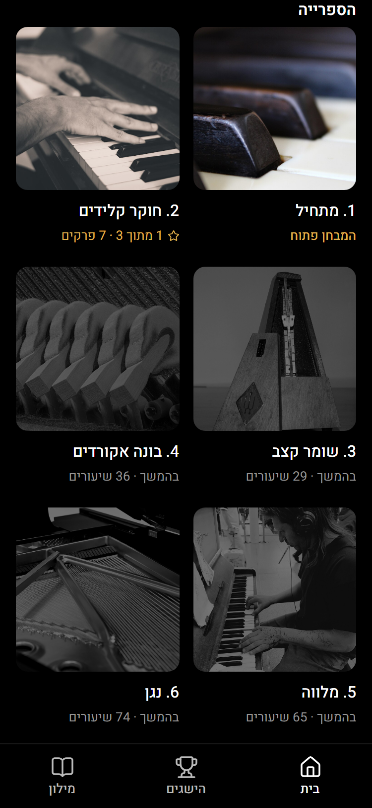
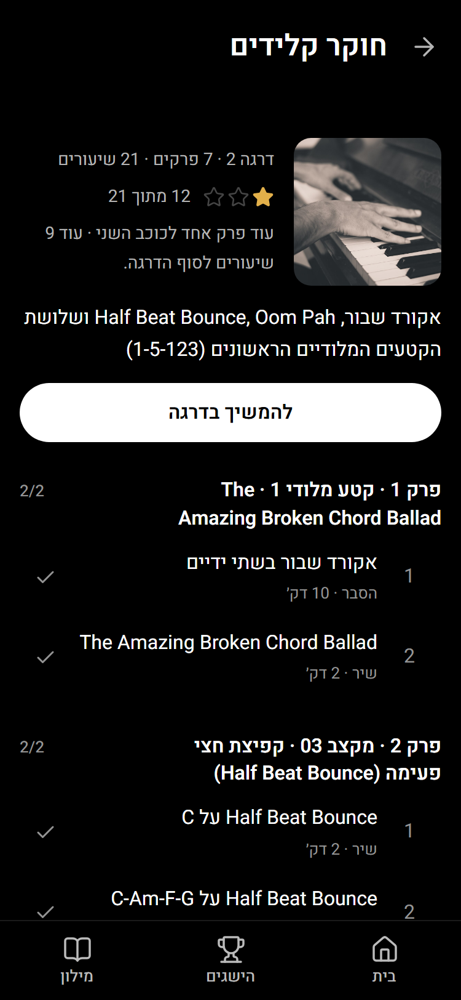
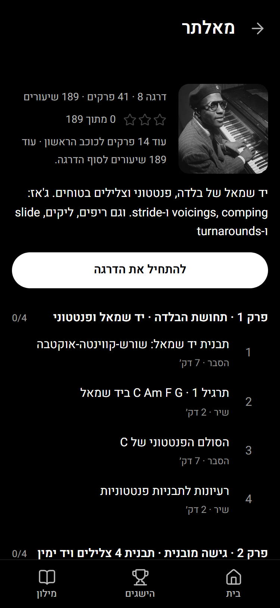

הספרייה ועמוד האלבום
צילומים ב-375px. האתר כבר מעודכן: yudisaiagent-cell.github.io/legato-looks/site
הספרייה
כל אלבום הוא עכשיו כפתור שפותח את עמוד הדרגה. התמונות של דרגות 8 ו-10 תוקנו (באייפון הן לא הופיעו). בתפריט התחתון 3 לשוניות.

עמוד אלבום: הדרגה שאתה בה
העטיפה, כמה שיעורים עשית, כמה פרקים נשארו לכוכב הבא, כפתור "להמשיך בדרגה", ואז כל הפרקים והשיעורים. וי על מה שסיימת.

עמוד אלבום: דרגה שעוד לא הגעת אליה
אפשר להיכנס ולהתחיל ממנה, כי השיעורים לא נעולים. התיאור של הדרגה כבר בלי "ספר 6, ספר 7".
